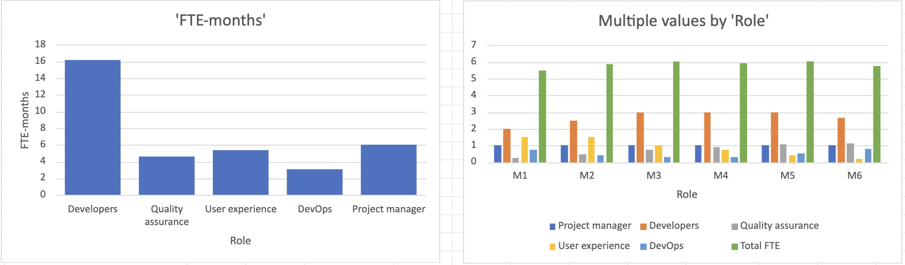

Sprint 2 document
Size the people
Translate the effort estimate into staffing needs and the time commitment required from the team.
4. Person-months
FTE-months = Hours ÷ 130, assuming 130 productive hours/person/month.
| Role | Hours | Calculation | FTE-months |
|---|---|---|---|
| Developers | 2,100 | 2,100 ÷ 130 | 16.15 |
| Quality assurance | 600 | 600 ÷ 130 | 4.62 |
| User experience | 700 | 700 ÷ 130 | 5.38 |
| DevOps | 400 | 400 ÷ 130 | 3.08 |
| Delivery subtotal | 3,800 | 3,800 ÷ 130 | 29.23 |
| Project manager | 780 | 780 ÷ 130 | 6 |
| Total | 4,580 | 4,580 ÷ 130 | 35.23 |
5. Staffing plan
| Role | M1 | M2 | M3 | M4 | M5 | M6 | FTE-months |
|---|---|---|---|---|---|---|---|
| Project manager | 1 | 1 | 1 | 1 | 1 | 1 | 6 |
| Developers | 2 | 2.5 | 3 | 3 | 3 | 2.65 | 16.15 |
| Quality assurance | 0.25 | 0.5 | 0.75 | 0.9 | 1.1 | 1.12 | 4.62 |
| User experience | 1.5 | 1.5 | 1 | 0.75 | 0.4 | 0.23 | 5.38 |
| DevOps | 0.75 | 0.4 | 0.3 | 0.3 | 0.55 | 0.78 | 3.08 |
| Total FTE | 5.5 | 5.9 | 6.05 | 5.95 | 6.05 | 5.78 | 35.23 |
Staffing charts

